Klassificering av förstasidor i texter
I datamängden Pub Lay Net
Abstract
The purpose of this study is to explore how to preprocess and handle one seventh of the large dataset of Pub Lay Net published by IBM with the goal of finding a model that can predict if a page in a text is a title page or not. The findings from this study show that it is important to reduce the size of the images when converting them to arrays, and at the same time only use a subset of the dataset when exploring which model gives the best results. The best balance between F1-score and fewest false positives when testing was an ensemble of Random Forest Classifier and K-Neighbor Classifier, where a positive prediction from either model was prioritized over negative prediction and using a lower threshold of 0.4 for positives, resulting in higher recall.
Innehållsförteckning
1 Inledning
I yrken som till stor del använder mjukvara till arbetsuppgifter ökar efterfrågan på att automatisera flöden, om det så är att fylla i samma information i olika dokument, hitta relevant dokument i olika system eller hantera e-postmeddelanden. Många av dessa arbetsuppgifter skulle kunna förenklas genom bland annat någon sorts AI-agent som genom maskininlärning kan genomföra den repetitiva och monotona uppgiften istället för användaren, vilken då skulle få en mer kontrollerande roll i de fall en AI-agent är osäker på en prediktion. En maskininlärningsmodells syfte är att lära sig att prediktera en observation, men sällan kan den prediktera 100 procent korrekt. Men en modell som är väl anpassad till uppgiftens syfte och har tillgång till relevant och bearbetad data skulle både kunna prediktera väl och uppmärksamma användaren på osäkerheter. Detta eftersom det generellt finns en för stor tilltro till att modeller predikterar korrekt, oavsett om det är en AI-agent med ett specifikt syfte eller en LLM. Det här tillvägagångssätt frigör användaren för andra arbetsuppgifter som kräver den mänskliga faktorn, samtidigt som hen ges en mer kontrollerande roll inom monotona arbetsuppgifter. Utifrån detta är det därför relevant att undersöka hur en modell skulle behöva utformas för att hantera texter utifrån flera olika perspektiv, med start i det enklare, som att prediktera texter och dess förstasidor. Ett andra relevant område är texter ska hanteras både för att träna en modell men också sedan användas vid produktionssättning.
Syftet med den här rapporten är att ge en inblick i hur en stor datamängd - bestående av dokument - skulle kunna bearbetas, dels för att få en förståelse för datamängden, dels för att med hanterbar modellträningstid kunna utvärdera vilken eller vilka modeller som ger högst korrekta prediktioner. För att uppfylla syftet kommer följande frågeställningar att besvaras:
- Hur bör en förhållandevis stor datamängd bestående av inskannade dokument bearbetas, så att en modell kan tränas på den?
- Vilken modell eller kombination av modeller (ensemble) ger högst f1-score men samtidigt få falska negativa när en modell ska avgöra om en sida i en text är förstasida eller inte?
- Hur använder man annotationer i samband med maskininlärning?
2 Teori
I det här avsnittet ges en kort sammanfattning av modeller och annan teori som är relevant för undersökningen.
2.1 Utvärderingsmetoder
För maskininlärning finns flera olika sätt att utvärdera hur väl en modell predikterar utfall av osedd data (se scikit-learn (2025a) för en utförlig lista). Val av utvärderingsmått beror bl.a. på vilken typ av problem som behandlas men också hur datamängden är uppbyggd samt dess omfattning. I den här undersökningen används i huvudsak tre utvärderingsmått inom klassificeringsproblematiken: confusion matrix och precision och recall tillsammans med F1-score, som bygger på den förstnämnda, vilka förklaras nedan.
2.1.1 Confusion Matrix
Enligt Prgomet, Johnson, Solberg och Rundberg Streuli (2025 s. 155ff) är confusion matrix inom klassificeringsproblem ett sätt att visualisera en tränad modells förmåga att prediktera osedd data i förhållande till de sanna värdena (se Figur 2‑1). Matrisen visar hur många av de sanna värdena som predikterades rätt i True Positives (TP) och True Negatives (TN) respektive fel False Positives (FP) och False Negatives (FN). Varje rad representerar den sanna klassen och varje kolumn den predikterade klassen.
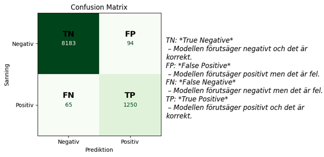
Figur 2‑1 - Confusion Matrix
2.1.2 Precision och recall
Precision och recall är två utvärderingsmått som ger andelen ”positiva prediktioner som faktiskt är korrekta” respektive andelen ”av den positiva klassen som predikteras korrekt” (Prgomet et.al. 2025) och som beräknas utifrån formlerna:
\[ Precision = \frac{TP}{TP + FP} \]
\[ Recall = \frac{TP}{TP + FN} \]
Dessa utvärderingsmått har ett avvägande samband, vilket generellt ger att en högre recall leder till en lägre precision och tvärt om. Avvägningen av utvärderingsmåtten görs med ett tröskelvärde, som från början antas vara 0.5, alltså att sannolikheten att en datapunkt tillhör den ena eller andra klassen är 50 procent men genom att sänka tröskelvärdet ökar antalet TP och FN minskar mot kostnaden att antalet FP ökar – värden som alltså i verkligheten inte tillhör den positiva klassen. Utifrån formlerna syns alltså att recall i det här fallet ökar och precision minskar: Fler FP ger en lägre precision medan färre FN ger en högre recall. Avvägningen med ett tröskelvärde beror på syftet med modellen. Två vanliga syften som brukar exemplifieras är att upptäcka cancer och att upptäcka ekonomisk korruption. I det första fallet är det bättre att fler personer kallas till undersökning: fler som faktiskt har cancer upptäcks (TP) och några fler som får beskedet att de inte har cancer (FN) – högre recall är önskvärt. I det andra fallet är det bättre att information som skickas vidare till polisen (TP) är mer säker med tanke på resurser som går åt att utreda fallet – högre precision är önskvärt.
2.1.3 F1-score
Prgomet et.al. (2025 s. 162) förklarar F1-score som ”det harmoniska medelvärdet för precision och recall” och beräknas med formeln:
\[ F1 = \frac{2TP}{2TP + 2FP + 2FN} \]
För att F1 ska vara högt behöver alltså både precision och recall vara höga. I Figur 2‑2 ges ett exempel på hur F1-score beräknas i förhållande till ett binärt klassificeringsproblem. Där syns att för varje klass beräknas F1-score baserat på precision och recall samtidigt som macro avg ger ett medelvärde för klassernas prediktioner.
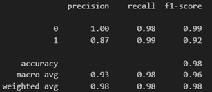
Figur 2‑2: Exempel på F1-score
2.2 Klassifikationsmodeller
I det här avsnittet ger jag en övergripande förklaring av de modeller som används i undersökningen.
2.2.1 RandomForestClassifier (RFC)
RFC beskrivs av scikit-learn (2025b) som en meta-estimator (eller ensemble) som tränar ett visst antal beslutsträd. Ett beslutsträd består av noder av vilkas den första och översta benämns rotnod som leder vidare till inre noder och slutligen de yttersta noderna, lövnoder. Modellen utgår från ett tröskelvärde och om observationen är större eller lika med tröskelvärdet utvärderas till sant går modellen vänster och för falskt höger. Hyperparametrarna för modellen har ett satt standardvärde och kan ändras för att anpassa modellen till syftet och för att regularisera modellen. Fler beslutsträd (n_estimators) i modellen kan ge ett bättre och stabilare resultat men ökar samtidigt träningstiden. max_depth sätter hur långt trädet får växa och hur många prover varje nod ska innehålla bestäms av min_samples_split. Desto djupare och ju färre prover varje nod innehåller kan leda till överanpassning men samtidigt låta modellen hitta mer komplexa mönster i datamängden.
Tabell 2‑1: Ett urval av hyperparametrar för RandomForestClassifier
| Hyperparameter (standardvärde) | Beskrivning |
|---|---|
| n_estimators=100 | Antal beslutsträd i modellen |
| max_depth=None | Maximalt djup för varje träd |
| min_samples_split=2 | Minst antal |
2.2.2 KNeighborsClassifier (KNC)
Scikit-learn (2025c) förklarar att KNC till skillnad mot RandomForestClassifier jämför varje observation med de övriga observationerna och beräknar avståndet till dessa samt klassificerar observationen till den klass som är vanligast hos de närmsta observationerna (grannarna), genom en ”majoritetsröstning”. Hyperparametern n_neighbors bestämmer hur många grannobservationer som ska tas i beaktan vid klassificeringen och weights avgör i vilken omfattning de påverkar resultatet: uniform ger att samtliga grannar påverkar lika mycket medan distance gör att närmare grannar påverkar mer.
Tabell 2‑2: Ett urval av hyperparametrar för KNeighborsClassifier
| Hyperparameter (standardvärde) | Beskrivning |
|---|---|
| n_neighbors=5 | Antal grannobservationer som ska användas vid ”röstning”. |
| weights=’uniform’ | Vilken viktfunktion som ska användas vid prediktioner. |
| metric=’minkowski’ | Utvärderingsmått som ska användas vid avståndsmätningen. |
2.2.3 SupportVectorClassifier (SVC)
Prgomet (2025 s.176ff) sammanfattar att målet med en SVC är att hitta en så bred ”väg” mellan datapunkter från två olika klasser. En ”väg” är i en SVC en beslutsgräns med en stödvektor på vardera sida, där marginalen sätts i förhållande till närmst datapunkt från respektive klass. Enligt scikit-learn (2025d) kan man regularisera modellen genom svc_c, där ett högt värde gör att modellen försöker klassificera mer träningsdata rätt, vilket i sin tur ger en smalare marginal utifrån beslutsgränsen. Ett lägre värde tillåter fler felklassificeringar, vilket då ger en bredare marginal. kernel kan ställas in till att ha en linjär beslutsgräns eller icke-linjära beroende på hur komplex datamängden är.
Tabell 2‑3: Ett urval av hyperparametrar för SVC
| Hyperparameter (standardvärde) | Beskrivning |
|---|---|
| svc_c=1.0 | Regulariseringsparameter |
| kernel=’rbf’ | Sätter vilken kerneltyp som ska användas i algoritmen. |
2.2.4 LogisticRegressionCV (LR)
Enligt Prgomet (2025 s.168) är en LR vid klassificering en modell som estimerar sannolikheten för att en datapunkt tillhör en viss klass. Modellen korsvaliderar genom att testa flera olika värden på regulariseringsparametern. För att ha en starkare regularisering anges ett lägre värde i Cs. penalty vilken typ av regularisering som används och solver specificerar vilken algoritm som ska användas för att hitta de bästa parametrarna.
Tabell 2‑4: Ett urval av hyperparametrar för LogisticRegressionCV
| Hyperparameter (standardvärde) | Beskrivning |
|---|---|
| Cs=10 | Regulariseringsstyrka |
| max_iter=100 | Max antal iterationer för algoritmen |
| penalty=’l2’ | Normen för straff |
| solver=’lbfgs’ | Algoritm som ska användas vid optimeringen |
2.3 StandardScaler
StandardScaler normaliserar de oberoende variablerna i datamängden genom att ta bort medelvärdet och skalar till en varians lika med 1. De får alltså ett medelvärde av 0 och variansen 1. För att det inte ska läcka data mellan tränings- och testdatan används träningsdatan med metoden fit_transform medan testdatan endast använder transform. Vissa modeller är mer känsliga för om datamängden är normaliserad, bl.a. Support Vector Machines som SVC (scikit-learn 2025e).
2.4 GridSearchCV
GridSearchCV är enligt scikit-learn (2025f) en metod för att hitta de optimala hyperparametrarna för en eller flera modeller. Genom att ge metoden ett rutnät av olika hyperparametrar för en modell testar GridSearchCV med hjälp av korsvalidering vilken kombination av hyperparametrar som ger bäst resultat för just den datamängden.
2.5 COCO-annotering
På Labelformat (2025) sammanfattas COCO (Common Objects in Context)-annotering som ett storskaligt objektdetektionsformat som har utvecklats av Microsoft. Formatet har blivit ett accepterat format för objektdetektion och skrivs i JSON-filer. Formatet har tre huvudkomponenter:
- Images, som definierar metadata för varje bild i datasetet, t.ex. bildens filnamn och storlek i pixlar.
- Categories, som definierar objektklasser, t.ex. rubrik, text, figur, tabell.
- Annotations, som definierar var ett objekt befinner sig och dess storlek, både rektangulärt och polynomt.
2.6 Bildkonvertering
För att kunna använda bilder i t.ex. jpg-format i modellträning behöver de konverteras i flera steg. Här ges en kort sammanfattning av de viktigaste stegen:
- Konvertera bilderna till gråskala.
- Ändra storlek på bilderna för snabbare hantering och att matriserna inte ska ta för mycket plats. Detta är beror naturligtvis på mängden data i datasetet.
- Normalisera pixelvärdena från 0-255 till 0-1, för att både ge en maskininlärningsmodell bättre förutsättningar och att alla features får likvärdig betydelse vid träningen.
- Platta ut matrisen från två dimensioner till en.
(Datacamp 2025, DevashishPrasad 2021 och scikit-learn 2025g)
3 Metod
I det här avsnittet ger jag en sammanfattning om vad den valda datamängden har för förutsättningar och hur jag bearbetade den, hur bilderna förbereddes inför modellträning och vilka steg som togs i samband med modellträningen. Vissa hänvisningar i det här avsnittet är till det projektets publicerade repository på GitHub med hänvisning till Svensson (2025) och i form av relevant filnamn.
3.1 Datamängden Pub Lay Net
Datamängden Pub Lay Net är framtagen och publicerad av IMB och består av dokumentbilder med artiklar publicerade på PubMed Central Open Access Subset. Till varje bild finns annotationer på var i dokumentet rubrik, text, figurer, tabeller och listor finns. Annoteringen är gjord enligt COCO-formatet som nämns i 2.5. Från början hade datamängden drygt 335 000 dokument och över 3 miljoner annotationer (Prasad 2021). Datamängden i den här undersökningen är hämtad från Kaggle.com och en sjundedel av originalet, bestående av knappt 48.000 dokument. Hur annotationerna ser ut exemplifieras i Tabell 3‑1 nedan. För tydlighetens skulle har jag tagit bort raden med datatyper samt kolumnerna iscrowd, image_id, height, width samt supercategory, vilka är mindre viktiga i förhållande till syftet med undersökningen. Vad de olika kolumnerna betyder är:
- segmentation ger en lista av polygonkordinater, vilka definierar exakta pixelgränser för kategorin i fråga.
- area visar segmentets area.
- bbox ger minsta rektangel som omsluter objektet, mätt från övre vänstra hörnet.
- category_id anger vilken kategori som objektet tillhör, vilket definieras i Category
- id är den unika identifieraren för varje annotation.
- file_name ger till vilket dokument observationen tillhör.
- name anger till vilken kategori som category_id tillhör.
Tabell 3‑1: Exempel på annotationer för datamängden
| segmentation | area | bbox | category_id | id | file_name | name |
|---|---|---|---|---|---|---|
| [[52.38, 444.87, … 444.87]] | 13787.43308252503600 | [40.42, 444.87, … 63.86] | 1 | 0 | “PMC3866684_00003.jpg” | “text” |
3.2 Databearbetning
Det första som gjordes för att kunna använda datamängden var att konvertera json-filen med annotationerna. Eftersom den inte hade anpassats till den mängd dokument som följde med datamängden var den väldigt stor och behövde konverteras i steg. Detta gjorde att polars och ijson behövde användas istället för pandas och json, eftersom dessa har en bättre förmåga att hantera stora datamängder. Samtidigt behövde konverteringen ske segmentvis för att hårdvaran skulle klara av konverteringen. Sedan behövde rader, som inte hade någon bild kopplad till sig, tas bort från dataframen, vilket gjordes genom ett skript som läste av vilka filnamn som fanns tillgängliga och filtrera dataframe efter dessa (Svensson 2025 – pln_data_preprocessing.py samt pln_delete_unused_data.ipynb). Detta resulterade i att 465.836 av 3.263.046 rader behölls.
Eftersom ett av syftena med undersökningen var att träna en modell som kan avgöra om en sida är en förstasida eller inte, behövde dataframen kompletteras med denna information, då detta saknades från början. I filnamnet gick det att utläsa om en sida var förstasida eller inte: förstasidor hade ändelsen 00000, medan övriga sidor hade en siffra större än 0 i sista ledet. Genom att läsa av filerna kunde alltså kolumnen title_page med 1 (Sant) och 0 (Falskt) läggas till (pln_add_title_page.ipynb). Sedan rensades dataframe på data som inte behövdes för det binära problemet (pln_title_df.ipynb), vilket gav en datframe med två kolumner: file_name (str) och title_page (bool).
Avslutningsvis togs ett utsnitt om 500 observationer för att kunna göra snabbare träning av modeller vid det utforskande steget, där modeller skulle utvärderas mot varandra. När utsnittet gjordes skedde det med stratifierad uppdelning, eftersom förstasidorna är underrepresenterade i datamängden (pln_mini_batch.ipynb).
3.3 Bildbearbetning
När bilderna bearbetades följdes stegen som nämns i 2.6 genom att först konvertera dem till gråskala. Eftersom målet var att kunna träna en modell på samtliga dokument förminskades också samtliga bilder till 128x128 pixlar från ursprungliga 612x792 pixlar, för att kunna träna modellen på hela datamängden snabbare. Sedan normaliserades pixelvärdena från 0-255 till 0-1. Och till slut plattades arrayen ut till en endimensionell array. För att se ett hur bilderna efter konverteringen såg ut gjordes också en visualisering som syns i Figur 3‑1 (pln_image_downscaling.ipynb).
Figur 3‑1: Konverterade bilder
Ett skript gjordes också för att konvertera samtliga bilder men med bibehållen storlek, vilket fick göras med ett utsnitt om 1000 bilder, eftersom en konvertering av samtliga bilder hade gett en array om cirka en terabyte, vilket inte hade varit möjligt (pln_image_konverting.py)
3.4 Modellträning
Avsnittet är uppdelat i två delar, dels de utforskande stegen som gjordes med flera olika modeller på urvalet om 500 observationer, dels de bäst presterande modellerna och hur dessa användes vidare. För resultat se Resultat och Diskussion.
3.4.1 Utforskande steg
De utforskande stegen gjordes som nämnts på det mindre urvalet av datamängden. De modeller som användes i det här steget var KNC, RFC, SVC och LR, vilka har förklarats i 2.2. Datamängden delades upp i tränings- och testdata för både X och y med stratifiering, eftersom förstasidor är underrepresenterade. Sedan normaliserades träningsdatan med StandardScaler och dess metod fit_transform, vilket också applicerades på testdatan med transform. För att hitta de bäst presterande hyperparametrarna för varje modell skapades en dictionary som hämtade in modellerna och de hyperparametrarna som skulle utvärderas, vilka sedan användes i GridSearchCV. Utifrån resultaten i F1-score, recall och precision samt confusion matrix gjordes sedan en jämförelse mellan de olika modellerna och hur ett lägre tröskelvärde påverkade modellerna RFC och KNCs resultat. För den förra testades också att visualisera feature importance. (Svensson 2025 – pln_exploratory_model_training.ipynb).
3.4.2 Vidare träning med RFC och KNC
De två bäst presterande modellerna RFC och KNC gjordes ytterligare utforskning på hur tröskelvärdet kunde ställas in för bättre resultat och hur de presterade när utfallet av feature importance implementerades genom att endast behålla de översta 40 raderna i varje observation (pln_exploratory_model_training_knc.ipynb och pln_exploratory_model_training_rfc.ipynb). Sedan kombinerades dessa modeller i en pipeline för att utvärdera vilka observationer som de predikterade korrekt först genom VotingClassifier och sedan genom att göra en ensemble av de två modellernas positiva prediktioner, i vilken en positiv prediktion från någon av modellerna prioriterades över en negativ prediktion (pln_observation_prediction_knc_rfc.ipynb).
3.4.3 Slutgiltig modell
Den slutgiltiga modellen sammanställdes i två python-skript ett med PCA och ett utan för att även här jämföra om de presterade olika, men också för att ha ett alternativ för snabbare träning. Delar som ingick i den slutgiltiga modeller, förutom databearbetning som redan var gjord, var:
- Behålla de översta 40 raderna av bilden
- Strategisk uppdelning av tränings- och testdata
- Normalisering av tränings- och testdata
- Träna KNC med hyperparametrarna metric=’minkowski’, n_neighbors=2, weights=’distance’, samt övriga hyperparametrar med standardvärde.
- Träna RandomForestClassifier med hyperparametrarna max_depth=None, min_sample_split=5, n_estimators=150, samt övriga hyperparametrar med standardvärde.
- Tröskelvärde = 0.4
- Ensemble-prediktion där en positiv prediktion prioriterades över en negativ prediktion
(pln_first_page_model_128x128.py samt pln_first_page_model_128x128_pca)
4 Resultat och Diskussion
I den första träningsrundan i det utforskande steget gav modellerna följande resultat:
Tabell 4‑1: RFC första träningen
| Klasser | F1-score |
|---|---|
| Förstasida | 0.52 |
| Ej förstasida | 0.95 |
| Medelvärde | 0.73 |
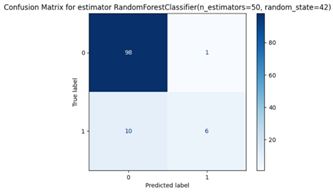
Tabell 4‑2: KNC första träningen
| Klasser | F1-score |
|---|---|
| Förstasida | 0.67 |
| Ej förstasida | 0.96 |
| Medelvärde | 0.81 |
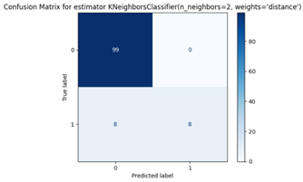
Tabell 4‑3: SVC första träningen
| Klasser | F1-score |
|---|---|
| Förstasida | 0.32 |
| Ej förstasida | 0.94 |
| Medelvärde | 0.63 |
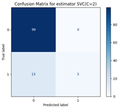
Tabell 4‑4: LR första träningen
| Klasser | F1-score |
|---|---|
| Förstasida | 0.43 |
| Ej förstasida | 0.94 |
| Medelvärde | 0.69 |
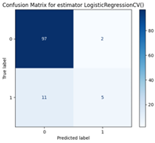
Utifrån resultaten ovan kan man dra slutsatsen att modellerna LR och SVC presterade väldigt mycket sämre än RFC och KNC. Därför utgick jag från att fortsätta med de två sistnämnda.
Som jag nämnde ovan gjordes också en feature importance för RFC vilket visualiseras i Figur 4‑1. Här blir det tydligt att de pixelrader som ligger i spannet mellan rad 0 och 40 är viktigare än övriga. Därav valdes att endast behålla rad 0-40 när modellerna skulle klassificera en bild till en förstasida eller inte.
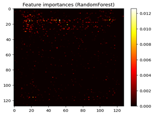
Figur 4‑1: Feature importance, RandomForestClassifier
Nästa steg blev att testa vilka tröskelvärden som gav ett bättre resultat. Detta med premissen att det är bättre att modellen hittar fler förstasidor och att några fler icke-förstasidor hamnar i fel klass, som i precision och recall-avvägningen. Tre tröskelvärden testades med RFC, vilket gav följande resultat:
Tabell 4‑5: RFC med anpassat tröskelvärde
| Klasser | F1-score |
|---|---|
| Förstasida | 0.88 |
| Ej förstasida | 0.98 |
| Medelvärde | 0.93 |
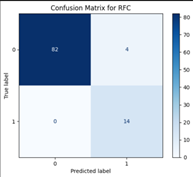
Tabell 4‑6: RFC med anpassat tröskelvärde
| Klasser | F1-score |
|---|---|
| Förstasida | 0.89 |
| Ej förstasida | 0.98 |
| Medelvärde | 0.94 |
Tabell 4‑7: RFC med anpassat tröskelvärde
| Klasser | F1-score |
|---|---|
| Förstasida | 0.75 |
| Ej förstasida | 0.97 |
| Medelvärde | 0.89 |
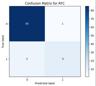
Utifrån resultaten syns att ett tröskelvärde på 0.3 för RFC ger det stabilaste resultatet. Samma gjordes med KNC, vilket gav resultaten:
Tabell 4‑8: KNC med anpassat tröskelvärde
| Klasser | F1-score |
|---|---|
| Förstasida | 0.77 |
| Ej förstasida | 0.97 |
| Medelvärde | 0.86 |
Tabell 4‑9: KNC med anpassat tröskelvärde
| Klasser | F1-score |
|---|---|
| Förstasida | 0.75 |
| Ej förstasida | 0.97 |
| Medelvärde | 0.86 |
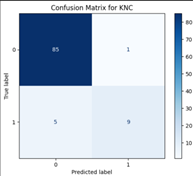
Tabell 4‑10: KNC med anpassat tröskelvärde
| Klasser | F1-score |
|---|---|
| Förstasida | 0.42 |
| Ej förstasida | 0.94 |
| Medelvärde | 0.68 |
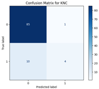
Som syns i en utvärdering av olika tröskelvärden för KNC är modellen inte lika känslig och det är först när tröskelvärdet går över 0.5 som resultaten blir sämre. I spannet 0.1-0.5 ger modellen liknande resultat.
Ett sista utforskande steg var att se hur de här två modellerna kunde kombineras till en slutlig modell. Här fanns det en tanke om att utnyttja varje modells styrka, dvs låta en slutgiltig modell ta prediktioner från den modell som predikterade dem rätt. Detta visualiserades enligt följande:
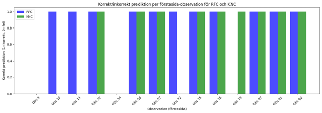
Figur 4‑2: Prediktioner från RFC och KNC
Här syns det att ingen modell kunde prediktera observation 9 eller 34 korrekt medan RFC kunde prediktera observation 10, 14 och 72 korrekt medan KNC predikterade dem fel, samtidigt som bara KNC predikterade observation 79 korrekt. Utifrån detta kan man alltså anta att en kombinerad modell skulle kunna dra nytta av respektive modells positiva prediktioner, alltså de fall som de predikterade en sida som förstasida. Som nämndes ovan i 3.4.2 testades en Voting-modell men den presterade inte så mycket bättre än varje enskild modell. Därför testade istället en ensemble-modell, i vilken varje modells positiva prediktion prioriterades över en negativa prediktion, vilket gav följande resultat:
Tabell 4‑11: KNC och RFC ensemble resultat med tröskelvärde om 0.3 ::: {layout=“[[50,50]]”}
| Klasser | F1-score |
|---|---|
| Förstasida | 0.52 |
| Ej förstasida | 0.95 |
| Medelvärde | 0.73 |
::: När till slut den slutgiltiga modellen tränades på all data gav fick jag ändra tröskelvärdet till 0.4, eftersom 0.25 gav följande:
Tabell 4‑12: KNC och RFC ensemble resultat med tröskelvärde om 0.25
| Klasser | F1-score |
|---|---|
| Förstasida | 0.92 |
| Ej förstasida | 0.99 |
| Medelvärde | 0.96 |
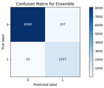
Tabell 4‑13: KNC och RFC ensemble resultat med tröskelvärde om 0.4 ::: {layout=“[[60,40]]”}
| Klasser | F1-score |
|---|---|
| Förstasida | 0.96 |
| Ej förstasida | 0.99 |
| Medelvärde | 0.98 |
:::
Med första tröskelvärdet på 0.25 predikterades alltså många icke-förstasidor som förstasidor och genom att testa lite olika tröskelvärden blev 0.4 en balanserad modell.
5 Slutsatser
Utifrån de tre inledande frågeställningarna är två besvarade i den här undersökningen:
- Hur bör en förhållandevis stor datamängd bestående av inskannade dokument bearbetas, så att en modell kan tränas på den?
- Vilken modell eller kombination av modeller (ensemble) ger högst f1-score och samtidigt få falska negativa när en modell ska avgöra om en sida i en text är förstasida eller inte?
Fråga ett bör besvaras med ”det beror på”, just när det kommer till förutsättningar i datamängden, som omfattning, syfte och tidsåtgång. Men generellt, vilket kan ses i rapporten behöver datamängden utforskas så att man får fram vilken data som är relevant, som översta 40 raderna för rubriker. Sedan behöver bilderna konverteras till arrayer så att en maskininlärningsmodell kan förstå den data som representerar bilden, samtidigt som varje pixel förenklas men ändå tillför så pass mycket information som är nödvändigt för modellen.
I fråga två utgick jag från fyra modeller med lite andra verktyg som GridSearch och PCA, men en kombination av modeller gav ett bättre resultat och just i det här fallet och med den här typen av data var det RFC och KNC med en ensemble-prediktion, som prioriterade en modells positiva prediktion över en negativ.
Målet i undersökningen var att också genomföra fråga tre:
- Hur använder man annotationer i samband med maskininlärning?
Men på grund av tidsbrist hanns detta inte med. Däremot är detta något som jag kommer att jobba vidare med i senare projekt. Ytterligare tankar som skulle kunna förbättra modellen är att annotationerna skulle behöva skalas ned så att de passar 128x128-formatet, eftersom konvertering av bilderna till arrayer i fullstorlek kräver mycket RAM och HDD-utrymme. Modellen skulle också kunna förbättras genom att skriptet tar hand om osäkra prediktioner på något sätt, alltså de prediktioner som hamnar i FN. Det skulle också vara intressant att titta vidare på de prediktioner som hamnar i ensemble-prediktionen, där modellerna inte är överens.
6 Självutvärdering
- Vad har varit roligast i kunskapskontrollen?
Att hitta lösningar på problem som jag inte visste att jag skulle stöta på från början, som t.ex: hur mycket HDD-utrymme som en stor datamängd kan ta när den konverteras till en array, beroende på storleken på den ursprungliga bilden. Många problem behövde lösas i samband med datahanteringen, både i förhållande till omfånget av bilder och annotationer.
- Vilket betyg anser du att du ska ha och varför?
VG: Jag tycker att jag med examinationen har uppvisat att jag har den kunskap som behövs för att uppnå betygskriterierna för VG i kursen:
- visa förmåga att resonera kring eget val av lösningsmetod
- reflektera och analysera för att lösa problem med hög säkerhet utifrån dess förutsättningar, risker, begränsningar, effekter, resultat och förbättringsmöjligheter.
- Vad har varit mest utmanande i arbetet och hur har du hanterat det?
Mängden begrepp, inte bara det teoretiska inom ML utan också detaljerna för alla de verktyg som har introducerats, från hur en modell i scikit-learn fungerar med alla hyperparametrar till alla sätt att utvärdera en modell beroende på problemtyp.
- Hur har grupparbetet gått?
Arbetade ju inte så mycket i grupp, men diskussionen gick väl.
/
Källförteckning
Datacamp (2025): https://www.datacamp.com/doc/numpy/converting-images-to-numpy
DevashishPrasad (2021): https://github.com/DevashishPrasad/CascadeTabNet
Labelformat (2025): https://labelformat.com/formats/object-detection/coco/
Prgomet, A., Johnson, T., Solberg, A. & Rundberg Streuli, L. (2025). Lär dig AI från grunden – Tillämpad maskininlärning med Python.
Prasad, Devashish (2021): https://www.kaggle.com/datasets/devashishprasad/documnet-layout-recognition-dataset-publaynet-t0/data
scikit-learn (2025a) : https://scikit-learn.org/stable/modules/model_evaluation.html
scikit-learn (2025b): https://scikit-learn.org/stable/modules/generated/sklearn.ensemble.RandomForestClassifier.html#sklearn.ensemble.RandomForestClassifier
scikit-learn (2025c): https://scikit-learn.org/stable/modules/generated/sklearn.neighbors.KNeighborsClassifier.html#sklearn.neighbors.KNeighborsClassifier
scikit-learn(2025d): https://scikit-learn.org/stable/modules/generated/sklearn.svm.SVC.html#sklearn.svm.SVC
scikit-learn(2025e): https://scikit-learn.org/stable/modules/generated/sklearn.preprocessing.StandardScaler.html#sklearn.preprocessing.StandardScaler
scikit-learn (2025f): https://scikit-learn.org/stable/modules/generated/sklearn.model_selection.GridSearchCV.html
scikit-learn (2025g): https://scikit-learn.org/stable/auto_examples/text/plot_document_classification_20newsgroups.html
Svensson, Peter (2025): https://github.com/fendraq/ml_application_documents.git
Figurförteckning
Tabellförteckning
- Tabell 2‑1: Ett urval av hyperparametrar för RandomForestClassifier
- Tabell 2‑2: Ett urval av hyperparametrar för KNeighborsClassifier
- Tabell 2‑3: Ett urval av hyperparametrar för SVC
- Tabell 3‑1: Exempel på annotationer för datamängden
- Tabell 4‑1: RFC första träningen
- Tabell 4‑2: KNC första träningen
- Tabell 4‑3: SVC första träningen
- Tabell 4‑4: LR första träningen
- Tabell 4‑5: RFC med anpassat tröskelvärde
- Tabell 4‑6: RFC med anpassat tröskelvärde
- Tabell 4‑7: RFC med anpassat tröskelvärde
- Tabell 4‑8: KNC med anpassat tröskelvärde
- Tabell 4‑9: KNC med anpassat tröskelvärde
- Tabell 4‑10: KNC med anpassat tröskelvärde
- Tabell 4‑11: KNC och RFC ensemble resultat med tröskelvärde om 0.3
- Tabell 4‑12: KNC och RFC ensemble resultat med tröskelvärde om 0.25
- Tabell 4‑13: KNC och RFC ensemble resultat med tröskelvärde om 0.4